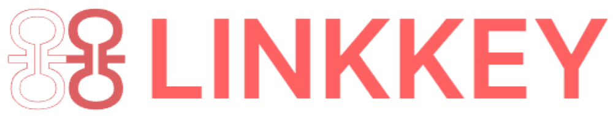

<!DOCTYPE html>
<html lang="en">

<head>
    <meta charset="UTF-8">
    <meta http-equiv="X-UA-Compatible" content="IE=edge">
    <meta name="viewport" content="width=device-width, initial-scale=1.0">

    <script src="./scripts/react.production.min.js"></script>
    <script src="./scripts//react-dom.production.min.js"></script>
    <script src="./scripts/babel.min.js"></script>
    <script src="./scripts/antd.min.js"></script>
    <link rel="icon" type="image/png" sizes="47*42" href="./assets/favicon.ico" />
    <link rel="stylesheet" type="text/css" href="./scripts/antd.min.css">
    <link rel="stylesheet" type="text/css" href="./index.css">
    <link rel="stylesheet" type="text/css" href="./reset.css">
    </script>
    <title>Road Map</title>
</head>

<body>
<div id="root"></div>

<script type="text/babel">

  class RoadMap extends React.Component {
    constructor(props) {
      super(props);
      let screenWidth = document.body.offsetWidth
      if (screenWidth < 600) {
        this.state = {mode: 'left'};
      } else {
        this.state = {mode: 'alternate'};
      }
    }

    // 监听浏览器窗口变化
    componentDidMount() {
      // 在window对象中添加监听事件
      window.addEventListener('resize', this.resizeWindow)
    }

    // 移除监听窗口变化的事件
    componentWillUnmount() {
      window.removeEventListener('resize', this.resizeWindow)
    }

    // 窗口变化执行的方法
    resizeWindow = () => {
      let screenWidth = document.body.offsetWidth
      if (screenWidth < 600) {
        this.setState({mode: 'left'})
      } else {
        this.setState({mode: 'alternate'})
      }
    }

    render() {
      return (
        <div className='container'>
          <a href='https://www.linkkey.io/' target='blank'>
            
          </a>
          <div className='home'>
            <antd.Timeline mode={this.state.mode} className='timelineWrapper' pending='Please look forward to it!'
                           pendingDot={<div className="spinIcon"></div>}>
              <antd.Timeline.Item color='green'>
                2021.09 Establishment of the founding team of Linkkey.
              </antd.Timeline.Item>
              <antd.Timeline.Item color="green">
                2021.11
                <a href="https://www.linkkey.io/whitepaper">《Linkkey white paper》</a>
                release,
                <a href="https://opensea.io/collection/linkkey"> fundraising INO</a>
                shelves Opensea, SNS personal domain name service enters R&D phase.
              </antd.Timeline.Item>
              <antd.Timeline.Item color='green'>
                2021.12 SNS personal domain name service online, release
                <a href="https://github.com/Link-Key/sns-app/releases/tag/sns_v1.0.0"> version 1.0</a>.
              </antd.Timeline.Item>
              <antd.Timeline.Item color="green">
                2022.01 SNS version updated to v1.2.x, SNS contract upgraded to
                <a href="https://github.com/Link-Key/sns-contract-v2"> v2.0</a>
                , bug fixes and security upgrades.
              </antd.Timeline.Item>
              <antd.Timeline.Item color='green'>
                2022.03 SNS releases v1.3.x, open KEY token
                <a href="https://mirror.xyz/0x2e4e14FA1fe656679fBfcdfa9F08afcebd248e9e/c8CF3b-zlQ0AgpmuH6VjUO0UOUafMfVIMrq0R0UyREc"> airdrop</a>
                , open
                <a href="https://mirror.xyz/0x2e4e14FA1fe656679fBfcdfa9F08afcebd248e9e/i812dwB8HxQtVHUoU8iJyHcAVACmcYfwrgCTF61q9ds"> multi-currency payment </a>
                 for personal domain
                registration.
              </antd.Timeline.Item>
              <antd.Timeline.Item color='green'>
                2022.04 Complete prototyping and technical selection of social chat service (Linkkey IM), SNS access to
                <a href="https://twitter.com/kava_platform/status/1505966758276042755"> KAVA (Cosmos ecology) </a> and Tron Network, released
                <a href="https://trx.sns.chat"> tron version of sns</a>. <del>KEY to be listed on well-known exchanges.</del>
              </antd.Timeline.Item>
              <antd.Timeline.Item color='green'>
                2022.05&06 Linkkey IM for R&D phase, build on-chain services based on Polygon, <del>SNS access to Metis (ETH
                Layer2 zkRollup)</del> , DEX build LP pool of KEY, open
                <a href="https://client.aragon.org/#/linkkey.aragonid.eth"> DAO community governance.</a>
              </antd.Timeline.Item>
              <antd.Timeline.Item color='green' >
                2022Q3
                <a href="https://mirror.xyz/linkkeyio.eth/rJ8UlH-gVq-IaM19xJMXzy4wDZdOj8ImVyuY-BcZVww"> Linkkey APP (alpha version) </a>
                released to open the internal test & public test of a high-value
                Web3 social circle service for Web3 native citizen.
              </antd.Timeline.Item>
              <antd.Timeline.Item color='#ea6060'>
                2022Q4 Linkkey APP (stable version) and mobile released, build a complete Web3 social circle service, including censorship-resistant crypto chat, privacy social circles, and token-incentivized social distribution networks.
              </antd.Timeline.Item>
              <antd.Timeline.Item color='#ea6060'>
                2023Q1 Launching business development, improving the economic system of the product, and building an economic inner circle.
              </antd.Timeline.Item>
            </antd.Timeline>
          </div>
        </div>
      )
    }
  }

  ReactDOM.render(
    <RoadMap/>,
    document.getElementById('root')
  );
</script>
</body>

</html>
